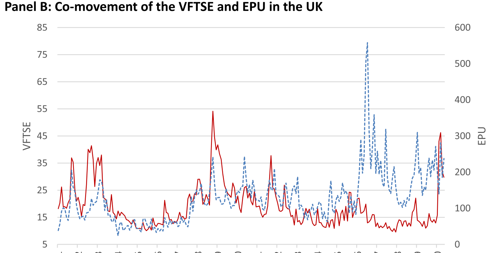
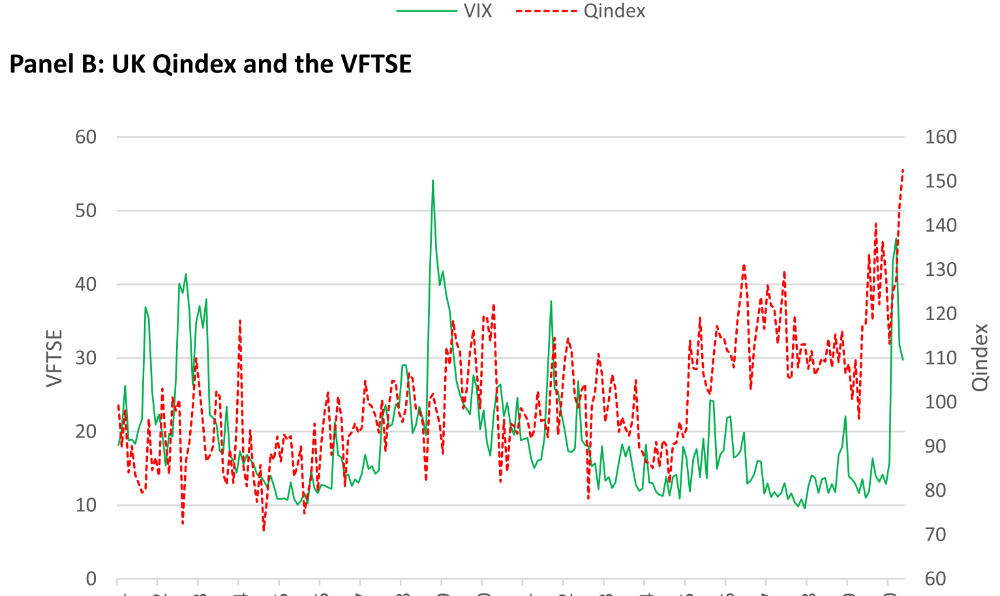
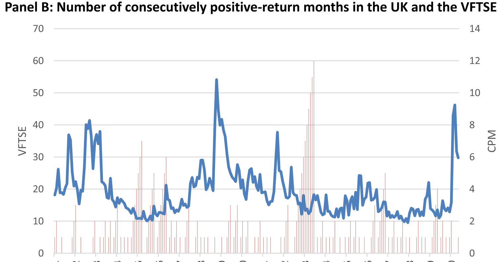
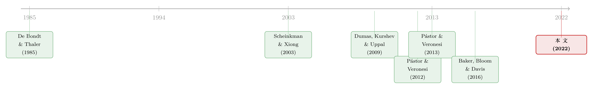

高政策不确定性，低市场波动率：恐慌指数为什么「该叫没叫」
本文读的是 Białkowski, Dang & Wei (2022, Journal of Financial Economics)：2016 年特朗普当选、英国脱欧公投之后，美国和英国的「政策不确定性」都冲上了高位，按教科书的逻辑，衡量市场恐慌的 VIX 本该跟着往上走，结果它却趴在历史低位。作者把这道「该高不高」的谜，拆给了三个嫌疑人——政治信号的质量、投资者意见的分歧、股市的牛市行情——并发现：当政治信号的质量低（偏离均值一个标准差）时，波动率与政策不确定性之间那条本该是正的链接，可以轻松地弱上一倍，而信号质量是三者中最强的那一个。
1 一个「该高不高」的恐慌指数
先讲一个让交易员和学者都挠头的画面。
2017 年，美国刚刚经历了一场撕裂的总统大选，新总统的政策走向扑朔迷离，关税、医保、税改的小道消息满天飞。按理说，这正是市场最该「紧张」的时候。衡量这种紧张的官方温度计，是芝加哥期权交易所的 波动率指数 (CBOE Volatility Index, VIX)——人称「恐慌指数 (fear gauge)」，它从标普 500 指数期权的价格里反推出市场对未来 30 天波动的预期。
可这支温度计偏偏没发烧。2017 年 VIX 的平均水平，只相当于它在 2000–2016 年间所有取值的第 3 个百分位——也就是说，过去十七年里，几乎没有比这更平静的日子。
那政策真的不乱吗？恰恰相反。作者用学界最常用的那把尺子去量——Baker-Bloom-Davis（下称 BBD）那个基于新闻文本构造的 经济政策不确定性指数 (Economic Policy Uncertainty, EPU)——发现 2017 年的美国 EPU 高达它在 2000–2016 年间取值的第 74 个百分位。一个在 3% 的低位，一个在 74% 的高位，两条线在 2016 年之后像两只赌气的手，越掰越开。

Figure 1: Economic political uncertainty and implied volatility index
更妙的是，这不是美国一家的怪事。把镜头切到大西洋对岸：2016 年英国脱欧公投前后，英国的隐含波动率指数 VFTSE 同样趴在 2001–2016 年间的第 4 个百分位，而英国 EPU 却高悬在第 94 个百分位。同样的剧本，在两个最成熟的发达市场里上演了两遍。
这就是本文标题里的那个「学术之谜」：高政策不确定性，本该配高市场波动率，可现实里它俩偏偏分了家。一个反复出现、横跨两国的现象，显然不像是某个短命的异常 (anomaly) 能解释的。背后一定有什么东西，在悄悄拨动着这条本该笔直向上的关系。
2 它为什么是个谜：先看理论本来怎么说
要理解这道题为什么算「谜」，得先知道教科书原本许诺了什么。
一连串实证研究——Sum and Fanta (2012)、Liu and Zhang (2015)、Li et al. (2016)、Goodell et al. (2020)——都记录过一个相当稳健的事实：股市波动率和经济政策不确定性是正相关的。直觉也很顺：政策越乱，公司前景越难判断，期权越贵，VIX 自然越高（Kelly et al., 2016 正是论证了政治越不确定、指数期权越贵）。
接着，一个自然的问题是：既然如此，为什么 2017 年这条正相关「失灵」了？
真正关键的钥匙，藏在 Pástor and Veronesi (2012, 2013) 那套政治不确定性的理论模型里。他们的核心论断可以用一句话概括：政治冲击 (political shocks) 之所以推高股价波动，是因为投资者据此更新了对「政府会采取哪种新政策」的信念——而这个更新有多剧烈，取决于政治信号有多精确。
换句话说，Pástor and Veronesi (2017) 把它点得更明白：市场波动率是「政治不确定性」与「政治信号质量」二者乘积的增函数。
这一步是整篇文章的题眼，值得停下来咀嚼。它意味着：政策不确定性高（乘式的第一项大），并不足以保证波动率高——如果信号质量很低（第二项趋近于零），那个乘积照样可以很小。当政治信号充满了「另类事实」、「假新闻」、反复与自相矛盾时，理性的投资者反而不会频繁更新信念，他们选择「再看看」(wait and see)，于是政治风险溢价和市场波动率双双走低。
于是反转出现了：2017 年那种「政策很乱、市场很静」的组合，在 Pástor-Veronesi 的框架里根本不是悖论，而是「高不确定性 × 低信号质量」这个乘积被第二项摁住的自然结果。本文要做的，就是把这个理论预言搬到数据里去检验。
3 三个嫌疑人
作者没有止步于「信号质量」这一个解释，而是把可能拨动这条关系的因素，列出了三位嫌疑人，逐一审问。
嫌疑人一：政治信号的质量 (quality of political signals)。 就是上面说的那个。信号越糊、越多反转和矛盾，投资者越不更新信念，波动率与政策不确定性的链接就越弱。
嫌疑人二：投资者的意见分歧 (investors' opinion divergence)。 这条线的理论源头是 Dumas, Kurshev, and Uppal (2009)：过度自信的投资者情绪相对于「持正确信念者」波动越大，市场波动率越高。一大批关于异质信念的研究——Scheinkman and Xiong (2003)、Buraschi and Jiltsov (2006)、Andrei et al. (2015)——也都指向「分歧抬高波动率」。（关于「投资者争的究竟是数字、还是数字有多可信」这一层更细的区分，可参见《分歧的两副面孔》。）
嫌疑人三：异常强劲的股市表现 (exceptional equity market performance)。 这条最微妙。Pástor and Veronesi (2013) 预言：经济越弱，现行政策越可能被替换，「换哪种新政策」的冲击就越大，于是波动率与政治不确定性的正相关越强——反过来，经济越强、牛市越久，这条正相关就越弱。叠加上行为金融里的代表性偏误 (representativeness bias)（De Bondt and Thaler, 1985；Benartzi and Thaler, 1995；Barberis et al., 1998），一轮持续的牛市会让投资者低估风险、压低对波动率的判断。
而 2017 年恰好牛得离谱：到当年 12 月底，标普 500 全收益指数已经连续 14 个月录得正收益；自 1871 年以来，这样持久的连涨只出现过六次。英国那边，2016–2017 年间 FTSE 100 全收益指数上涨了 33%，过去 24 个月里有 17 个月为正。
上面这条 ISD（individual sentiment deviation，equation (2)）是作者衡量「意见分歧」的一把尺子，原料是 美国个人投资者协会 (American Association of Individual Investors, AAII) 每周的情绪调查：成员被问「未来六个月股市看涨、看平、还是看跌」。这里有个容易绕晕的地方值得提醒——
ISD 越大，意味着看多或看空有一方明显压倒另一方，市场存在一个主导情绪，因而分歧更小、共识更高；反之，当看多看空被劈成势均力敌的两半时，ISD 很小，那才是意见分歧最大的时候。方向是反的，读结果时千万别认错符号。
4 真正关键的一步：把「信号质量」量出来
三个嫌疑人里，第一个最棘手——「政治信号的质量」听上去很玄，怎么量？
这是本文方法上最有意思的一手。作者借用了 Baker et al. (2016) 构造 EPU 指数的那套文本计数思路，但把搜索词换掉，造出一个全新的指标 Qindex。
具体怎么做？BBD 的 EPU 要求一篇文章同时命中三类词：不确定性、经济、政策。作者保留了「政策」这一类（如 "deficit"、"legislation"、"Federal Reserve"），却把另外两类替换成了质量类（如 "false"、"misleading"、"ambiguous"）和信号类（如 "signal"、"declarations"、"claim"）。换句话说，一篇文章要被计入 Qindex，必须同时谈到「政策」「信号」以及「这个信号有多不靠谱」。
接着是和 BBD 一样的标准化流程：作者用 Factiva 数据库扫描了美国按发行量排名前十的报纸（USA Today、The Washington Post、The New York Times、The Wall Street Journal 等），把每报每月的命中数除以该报当月文章总数（消除报纸体量差异），再各自标准化到单位标准差，按月在十家报纸间求平均，最后整体归一化。英国版 Qindex 用同样的质量和信号词、略微调整政策词，覆盖 Financial Times、The Times、The Sun 等十家英国报纸。
结果很说明问题：特朗普当选、脱欧公投之后，Qindex 显著上升——指标越高，意味着信号质量越差。这恰好和趴在地板上的 VIX 对得上。

Figure 2: Quality of political signals and implied volatility index
但只用一个自造指标，难免被质疑「结论是被指标选择驱动的」。作者于是又备了两把替代尺子，专门用来堵这个口子：
- EPU 变异度
EPUV：取当月 EPU 月度值，与该月每日 EPU 均值的绝对差。直觉是，日度 EPU 取材自上千家报纸（含大量地方报），月度 EPU 只取全国前十大报；当信号清晰时，地方与全国记者对不确定性的判断应当趋同，差距小，反之差距大。EPUV的好处是能直接从 EPU 时间序列里算出来。 - 华盛顿邮报事实核查
WPFC：自 2017 年 1 月起，《华盛顿邮报》逐日统计了时任总统特朗普「虚假或误导性言论」的条数，作者取其五日移动平均。它最大的价值在于——对 VIX 和 EPU 都是外生的，从而能缓解反向因果 (reverse causality) 的担忧。
这种「一个主指标 + 两个外生替代」的搭法，是本文在识别上最讲究的地方：它把「信号质量」从一个口号，变成了三个可以互相印证的可测变量。这套用报纸文本「数」出抽象概念的思路，和《报纸是怎么「数」出股市恐慌的》是一脉相承的。
5 数据
把口径摆清楚，是判断这类时间序列研究可信度的前提：
- 观测单位：月度。美国样本期
2000 年 1 月 – 2020 年 3 月，英国样本期2001 年 1 月 – 2020 年 5 月。 - 被解释变量：隐含市场波动率——美国用 CBOE VIX，英国用 VFTSE。
- 核心解释变量：BBD 的 EPU 指数（美国十大报、英国十大报两套口径）。
- 三大因子代理：信号质量用
Qindex/EPUV/WPFC；意见分歧用 看跌期权-看涨期权成交量比 (put-call ratio)、ISD、以及Shiller (2000)的股市信心指数三种；股市表现用持续正收益的牛市度量。 - 实证设计：核心是把 EPU 与各因子做交互，看交互项如何改变「EPU → 波动率」的斜率，并在美、英两个市场上分别验证。
6 主要结果
绕了一大圈，落点其实很干净。
第一，三个嫌疑人全部「有罪」。 低质量的政治信号、更高的投资者意见分歧、异常强劲的股市表现，都会一致地削弱波动率与政策不确定性之间那条本该为正的链接。三者方向一致、相互独立地起作用。
第二，信号质量是「主犯」。 在三者中，政治信号的质量是最主导的那个因素。作者给出的量级很直白：当信号质量低到偏离其均值一个标准差时，「隐含波动率 ↔ 政策不确定性」的链接可以轻松弱上一倍 (two times weaker)。这正好把 2017 年那道谜解开了——不是市场不怕，而是它读不懂这些反复横跳的信号，索性按兵不动。
第三，结论扛得住折腾。 把 Qindex 换成 EPUV 或外生的 WPFC，把意见分歧的代理在三种之间替换，结果都站得住。这意味着核心发现不是某一个自造指标的产物。

Figure 4: Persistence of positive equity market performance and implied volatility
合起来，本文的结论支持了 Pástor and Veronesi (2013) 理论模型的实证含义：那个「波动率 = 政治不确定性 × 信号质量」的乘积结构，确实在数据里留下了痕迹。
7 文献脉络
把这篇文章放进它所在的那条河里看，脉络相当清晰。
最上游是行为金融对「过度反应」的发现：De Bondt and Thaler (1985) 让人们意识到投资者会基于近期表现给资产贴上「好/坏」的标签——这是日后「牛市压低风险感知」一说的种子。
接着，异质信念与波动率这条支流汇了进来：Scheinkman and Xiong (2003) 把过度自信和投机泡沫连了起来，Dumas, Kurshev, and Uppal (2009) 则用一个理论模型把「意见分歧 → 过度交易 → 波动率」讲透。本文的第二个嫌疑人正是站在这条支流上。
然后，真正决定本文骨架的，是 Pástor and Veronesi (2012, 2013) 那套政治不确定性的均衡定价模型——它第一次把「政治信号的精确度」摆到了波动率方程的中心位置。

与此同时，方法论上的关键一环是 Baker et al. (2016)：正是它用新闻文本造出了被广泛采用的 EPU 指数，也给了本文「换几个搜索词就能造一个新指标」的灵感。
而本文 (2022) 的位置，就在这几条支流的交汇处：它把 Pástor-Veronesi 的理论预言、Baker et al. 的文本计数方法、以及行为金融的牛市偏误，拧成一根绳，去解释 2016 年之后两个发达市场同时出现的「高 EPU、低波动率」之谜。据作者所知，这是第一篇在两大发达市场上，实证检验这三个因素对该谜贡献的研究。
8 评论与延伸（Q&A + 研究方向）
(a) 几个可能的疑问
Q：这不就是「政策不确定性高，但市场不信」吗，有必要绕这么大弯吗？
区别恰恰在这「绕的弯」上。简单说「市场不信」是个事后叙事，无法证伪。本文的贡献是把「不信」拆成了一个可测的机制——信号质量——并用
Qindex、EPUV、WPFC三把尺子量出来，再证明它能把 EPU→波动率 的斜率压弱一倍。机制可测、量级具体，才从「故事」变成了「证据」。
Q：Qindex 是作者自己造的，会不会是「想要什么结论就调什么词」？
这是最该警惕的点，作者也心里有数。所以他们另备了两把不靠自己造词的尺子：
EPUV直接从官方 EPU 序列算出，WPFC来自《华盛顿邮报》的第三方核查、且对 VIX 和 EPU 都外生。三把尺子结论一致，才大大降低了「指标驱动结果」的嫌疑。当然，Qindex的搜索词表本身仍有研究者自由度，这是无法完全消除的。
Q：ISD 越大代表分歧越大还是越小？很容易搞反。
越小才代表分歧越大。
ISD大，说明看多看空有一方压倒性占优、形成了主导情绪，那是共识高；当两者势均力敌、被劈成两半时ISD趋近于 0，那才是分歧的顶点。这个反向关系是读懂本文结果的前提。
Q：会不会是反向因果——低波动率本身让新闻显得「质量差」？
这正是
WPFC存在的理由。总统每天说了多少句假话，是个对市场波动率和 EPU 都外生的政治变量，不太可能由 VIX 高低决定。用它做替代仍得到一致结论，是对反向因果担忧的一个直接回应——虽然不等于严格的外生冲击识别。
Q：用 VIX 当「真实波动率」的代理可靠吗？它本身是期权价格反推的预期。
这其实是本文的妙处而非软肋。VIX 衡量的恰恰是市场预期的未来波动，而
Pástor-Veronesi的机制说的正是「投资者要不要更新信念」。信号质量差→不更新→预期波动低，逻辑链条直接落在 VIX 这个「预期」量上，而非已实现波动。作者也用了已实现波动率做参照。
Q：这套解释只在 2016–2017 这段「特例」里成立吗？
不是。作者特意把样本拉到
2000–2020（美国）和2001–2020（英国）整整二十年，交互项在全样本上都成立。2016 年之后只是这个机制表现得最戏剧化的一段，而非唯一支撑结论的时期。这也是作者强调「不像短命异常」的底气。
(b) 几个可能的研究问题与提案
1. 把「信号质量」搬进公司债与信用利差。
【经济故事】本文的舞台是股票期权（VIX）。但信用市场对政策同样敏感：政策越乱，信用利差越宽。如果「信号质量」会摁住股票波动率，它会不会也摁住信用利差对 EPU 的敏感度？当投资者读不懂政策信号时，他们对违约概率的更新或许同样停摆。
【可行性】中。数据现成：
Qindex已公开（作者网站按月更新），信用利差可用 ICE BofA 或 TRACE 构造，EPU 公开。识别上沿用本文的交互回归即可，难点在于信用利差还受流动性与供给冲击污染，需要额外控制。
2. 外资持有人会不会「读信号」读得更慢？
【经济故事】
Pástor-Veronesi的机制是「投资者更新信念」，而外国投资者解读一国政治信号的成本天然更高。那么在外资持有比例高的市场或资产里，「信号质量」对波动率的削弱效应是不是更强——因为外资更容易陷入「读不懂、不更新」？【可行性】中。需要跨国的隐含波动率指数（VIX、VFTSE、VDAX、VSTOXX 等）加上各国外资持有比例（IMF CPIS 或各国托管数据）。识别可做成「信号质量 × 外资份额」的三重交互。挑战在外资份额的内生性与各国 EPU 口径的可比性。
3. 大语言模型能不能造一个更干净的「信号质量」指标？
【经济故事】
Qindex靠关键词计数，难免把「报道假新闻」和「自己就是假新闻」混在一起。用 LLM 直接对新闻文本打「这条政治信号有多模糊/自相矛盾」的分，理论上能造出语义层面更精准的信号质量度量，再去复刻并强化本文的检验。【可行性】高。新闻全文可经
Factiva/新闻 API 获取，LLM 打分成本已可承受。最大风险是 LLM 评分的可复现性与样本期外的稳定性，需要做大量稳健性与人工校验。
4. 把意见分歧的「方向陷阱」做成一个独立检验。
【经济故事】本文用了三种分歧代理（put-call、
ISD、Shiller 信心指数），但它们捕捉的「分歧」未必一致。一个干净的研究是：在控制 EPU 与信号质量后，单独检验「分歧」与「信号质量」谁才是更根本的驱动——毕竟糟糕的信号本身就会制造分歧，二者可能高度共线。【可行性】中。数据与本文同源。识别难点在于分歧与信号质量内生纠缠，可能需要找一个只冲击分歧、不冲击信号质量的外生事件（如调查口径变更）来分离。
参考文献
- Baker, S.R., Bloom, N., Davis, S.J. (2016). Measuring economic policy uncertainty. Quarterly Journal of Economics 131(4), 1593–1636.
- Barberis, N., Shleifer, A., Vishny, R. (1998). A model of investor sentiment. Journal of Financial Economics 49(3), 307–343.
- Benartzi, S., Thaler, R.H. (1995). Myopic loss aversion and the equity premium puzzle. Quarterly Journal of Economics 110(1), 73–92.
- De Bondt, W.F.M., Thaler, R. (1985). Does the stock market overreact? Journal of Finance 40(3), 793–805.
- Dumas, B., Kurshev, A., Uppal, R. (2009). Equilibrium portfolio strategies in the presence of sentiment risk and excess volatility. Journal of Finance 64(2), 579–629.
- Goodell, J.W., et al. (2020). Economic policy uncertainty and stock market volatility.
- Kelly, B., Pástor, Ľ., Veronesi, P. (2016). The price of political uncertainty: theory and evidence from the option market. Journal of Finance 71(5), 2417–2480.
- Liu, L., Zhang, T. (2015). Economic policy uncertainty and stock market volatility. Finance Research Letters 15, 99–105.
- Pástor, Ľ., Veronesi, P. (2012). Uncertainty about government policy and stock prices. Journal of Finance 67(4), 1219–1264.
- Pástor, Ľ., Veronesi, P. (2013). Political uncertainty and risk premia. Journal of Financial Economics 110(3), 520–545.
- Pástor, Ľ., Veronesi, P. (2017). Explaining the puzzle of high policy uncertainty and low market volatility.
- Scheinkman, J.A., Xiong, W. (2003). Overconfidence and speculative bubbles. Journal of Political Economy 111(6), 1183–1220.
- Shiller, R.J. (2000). Irrational Exuberance. Princeton University Press.
- Sum, V., Fanta, F. (2012). Long-run relation and speed of adjustment of economic policy uncertainty and excess return volatility.